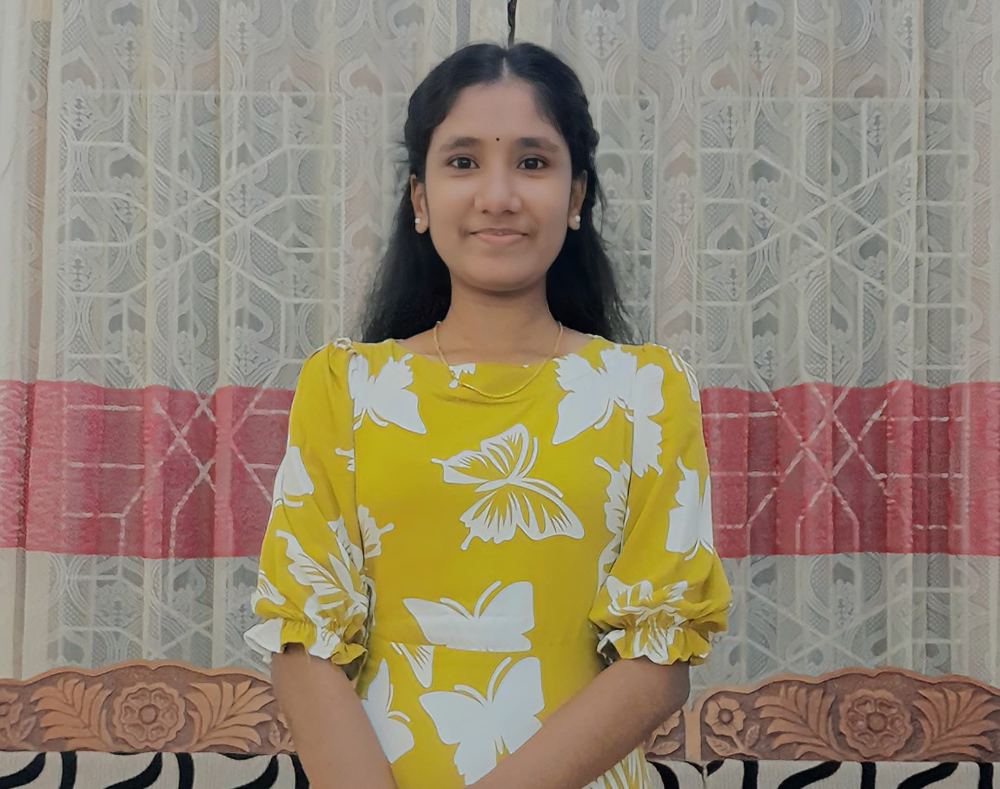

About Me
Dedicated Research Assistant specializing in biotechnology research projects. Expert in DNA analysis, laboratory procedures, and maintaining precise experimental protocols. Committed to advancing biotechnological solutions through collaborative research.
Core Competencies
Critical thinking
80%Adaptability
95%Problem Solving
75%Attention to detail
90%Contact Information
Phone:
+94 768 647 534
Email:
niroignatious@gmail.com
Address:
35/4, 2nd cross, Saravana Road, Kallady, Batticaloa
Resume
Download ResumeEducation
B.Sc. Biotechnology
SLIIT
First Year Undergraduate
Advanced Level
BT/ Vincent girls' High School
Biology Stream
Biology - C
Chemistry - S
Physics - S
Ordinary Level
Results: 6A, 3B
Language Proficiency
Tamil :- Native
English :- Fluent
Sinhala :- Fluent
Leadership & Activities
2024 - 2028
Member of Leo Club, SLIIT
2024 - 2028
Media Club Member, SLIIT
2019 - 2020
School Prefect, V.G.H.S
2016 - 2020
Environmental Pioneer Brigade Member, V.G.H.S
Professional Experience
Molecular Laboratory Assistant
Zodiac Researches Institute
Research Assistant
Tissue Culture Lab, University of Colombo
Professional Reference
Prof. Varanan
Tissue Culture Lab, University of Colombo (Pvt) Ltd.